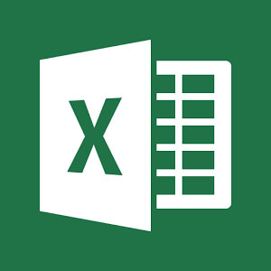
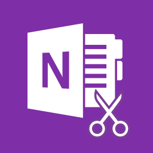

Instalacja oprogramowania biurowego oraz graficznego
Niezbędnymi narzędziami do pracy przy komputerze są programy biurowe. Pozwalają nam one na wykonywanie w prostszy sposób dużej części zadań nam zleconych.
Najpopularniejsze z nich to:
Pakiet Microsoft zawierający:
- Microsoft Word - Edytor tekstu
- Microsoft Excel - Arkusz kalkulacyjny 
- Microsoft PowerPoint - Tworzenie i wyświetlanie prezentacji
- Microsoft OneNote - Sporządzanie notatek 

Pakiet Apache OpenOffice zawierający:
- Procesor tekstu – Writer
- Arkusz kalkulacyjny – Calc
- Edytor grafiki – Draw
- Edytor prezentacji – Impress
- Program do tworzenia baz danych – Base
- Program do tworzenia wzorów matematycznych – Math
Cena takiego pakietu kosztuje ok. 589zł.
Natomiast pakiet Apache OpenOffice jest w pełni darmowy.
Z programami graficznymi sprawa jest bliźniaczo podobna, ale dzielimy jeszcze programy na te do grafiki:
Rastrowej: prezentacja obrazu za pomocą matrycy punktów w postaci prostokątnej siatki odpowiednio kolorowanych pikseli na monitorze komputera, drukarce lub innym urządzeniu wyjściowym.
W systemach komputerowych grafika rastrowa jest przechowywana w sposób skompresowany (stratnie lub bezstratnie) albo nieskompresowany w wielu formatach plików graficznych.
Przykładem takiego programu może być:
- Adobe Photoshop
- Paint Shop Pro
- GIMP
Wektorowej: obraz opisany jest za pomocą figur geometrycznych umiejscowionych w matematycznie zdefiniowanym układzie współrzędnych, odpowiednio dwu- lub trójwymiarowym.
Programami do grafiki wektorowej są:
- CorelDRAW
- Adobe Illustrator
- Artstream